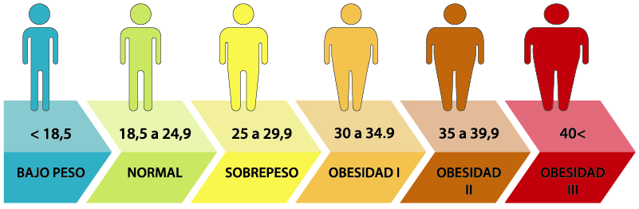

<ion-header>
  <ion-toolbar color="aye">
    <ion-buttons style="padding-right: 7px;" fill="clear" color="dark" slot="end">
      <ion-icon name="information-circle-outline"></ion-icon>
    </ion-buttons>
    <ion-buttons slot="start">
      <ion-button routerLink="../app/tabs/progress">
        <ion-icon name="arrow-back-outline"></ion-icon>
      </ion-button>
    </ion-buttons>
    <ion-title>
      <ion-label style="display: flex; align-items:center;">IMC <ion-icon style="padding-left: 7px;"
          name="fitness-sharp"></ion-icon>

      </ion-label>
    </ion-title>
  </ion-toolbar>
</ion-header>

<ion-content>
  <ion-refresher slot="fixed" (ionRefresh)="doRefresh($event)">
    <ion-refresher-content></ion-refresher-content>
  </ion-refresher>
  <ion-card style="padding:20px">
    <ion-text>
      El índice de masa corporal (IMC) es un número que se calcula con base en el peso y la estatura de la persona.
    </ion-text>
  </ion-card>

  <ion-card>
    <div style="padding: 7.5%;">
      <b color="aye">
        IMC inicial
      </b>

      <span style="float: right;">
        <b>
          IMC actual
        </b>
      </span>

    </div>

    <ion-item>
      <ion-badge color="aye" style="font-size: large;" slot="end" id="peso_actual">{{imc_actual}} %
      </ion-badge>
      <ion-label style="text-align: center;">
        <ion-icon name="arrow-forward-outline"></ion-icon>
      </ion-label>
      <ion-badge style="font-size: large; " color="light" slot="start">{{imc_inicial}} %
      </ion-badge>
    </ion-item>
  </ion-card>


  <ion-card>
    <div style=" padding-top: 15%; text-align: center;">
      <b (click)="Show()">
        Tu peso objetivo es: <ion-icon name="create-sharp"></ion-icon>

      </b>
      <ion-input [(ngModel)]="imc_objetivo" *ngIf="show" type="number" placeholder="Peso objetivo">
        <ion-button (click)="modificacion_Imc_Objectiu()" fill="clear">OK</ion-button>
      </ion-input>
    </div>

    <div style=" padding-top: 10%; text-align: center;">
      <ion-label>
        <ion-icon name="arrow-down-outline"></ion-icon>
      </ion-label>
    </div>
    <ion-item>

      <ion-label style="text-align: center; font-size: small; width: 25px; padding-top: 8%;">
        <ion-text style="font-size: 40px;font-weight: bold;" slot="start" color="aye">
          <ion-icon style="padding-left: 7px;" name="fitness-sharp"></ion-icon> {{imc_objetivo}} %
        </ion-text>
      </ion-label>
     
    </ion-item>
    
  </ion-card>
</ion-content>